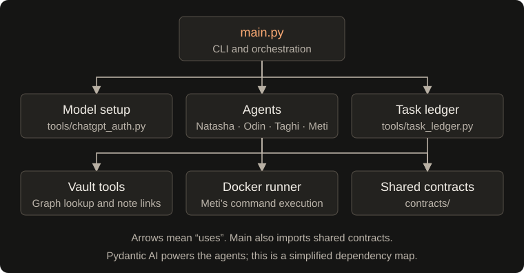

Architecture
Component connections

Arrows show which component uses another. Shared contracts define stage outputs, handoffs, and checkpoints used by orchestration, agents, and the ledger. Vault tools support graph lookup and project-note links; each agent saves its own stage artifacts.
Repository map
.
├── main.py CLI, task IDs, routing, and orchestration
├── contracts/
│ └── __init__.py Shared typed checkpoints, stage outputs, and handoff contracts
├── agents/
│ ├── natasha.py Structured briefs and routing
│ ├── odin.py Research reports
│ ├── taghi.py Specifications and execution phases
│ ├── execution_policy.py Phase validation ordering, retry budgets, and recovery policy
│ ├── review_renderer.py Markdown code review report rendering
│ └── meti.py Implementation coordination and Docker tools
├── tools/
│ ├── chatgpt_auth.py OAuth credential storage and model setup
│ ├── context_pruner.py Markdown stripping, graph context ranking, and Docker log slicing
│ ├── docker_runner.py Container lifecycle and workspace mounts
│ ├── graphify_tool.py Graph extraction, node search, and neighbors
│ ├── onboarding.py Interactive provider setup and local .env persistence
│ ├── web_search.py Search results, URL checks, page helper, and registry lookup
│ ├── model_tiers.py Tiered routing presets, budget estimation, and lead overrides
│ ├── project_notes.py Project IDs, note creation, and shared links
│ ├── task_ledger.py SQLite checkpoints and per-task process locks
│ ├── token_analytics.py Token usage tracking, model pricing, and summary tables
│ ├── ui.py Terminal styling, agent color badges, panels, and phase tables
│ └── vault_infra.py Safe Markdown writing, graph tool wiring, and graph updates
├── .github/workflows/tests.yml Automated platform tests
├── tests/ Deterministic platform tests
├── scripts/validate.py Local test runner
├── docs/index.html GitHub Pages presentation
├── pyproject.toml Package metadata and dependencies
├── vault/ Local Markdown knowledge base
└── workspace/ Generated task workspaces
Development and documentation
The installed distribution provides the console script entry point buildrelay (e.g. buildrelay "prompt" or buildrelay config), or you can run directly from the checkout with python main.py. Runtime dependencies and Python requirements are declared in pyproject.toml; dependency versions are lower bounds rather than a locked environment.
The agent classes can also be called directly with a model_name (model string or Pydantic AI model object) and a vault_path. Agents support explicit dependency injection: graph_manager, custom artifact storage directories (tasks_dir, research_dir, specs_dir, code_reviews_dir), and MetiImplementer additionally accepts custom sandbox runners (e.g. DockerSandboxRunner or mock test runners). Constructors defer Docker connections and directory creation until operations actually require them. Programmatic Meti calls can supply checkpoint, checkpoint_callback, and a new run_number to persist and restore implementation progress; the CLI connects these to the ledger automatically. The CLI resolves a model per lead from provider tier presets and overrides. Collaborator injection and custom artifact-directory options are programmatic interfaces, not CLI flags.
Website documentation
The GitHub Pages site in docs/ provides an introduction, terminal example, and focused technical guides with persistent navigation. Technical guide content is generated from this README; edit the README first, then rebuild and commit the generated pages:
python scripts/build_docs.py
The builder uses markdown-it-py, installed with the existing Rich dependency. Site styling and mobile navigation live in docs/site.css and docs/site.js; the introduction and terminal example templates live in the builder. The captured output in docs/examples/terminal-session.txt is a dated CLI/offline-test run, not a model-powered implementation demo. Rebuilding the site does not rerun that capture. Open docs/index.html locally to review, or serve docs/ with a local static server. GitHub Pages serves the committed output without a new documentation service.